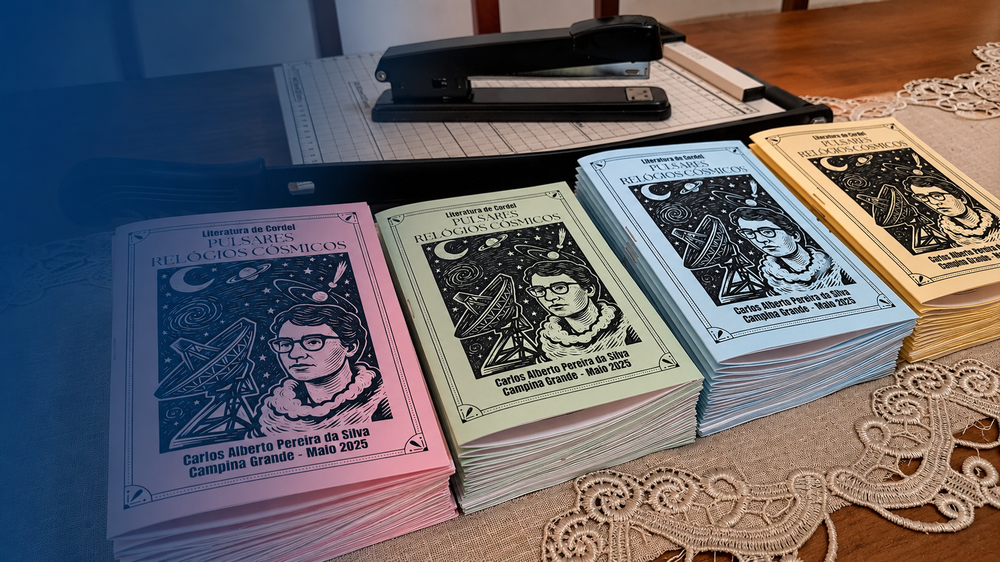
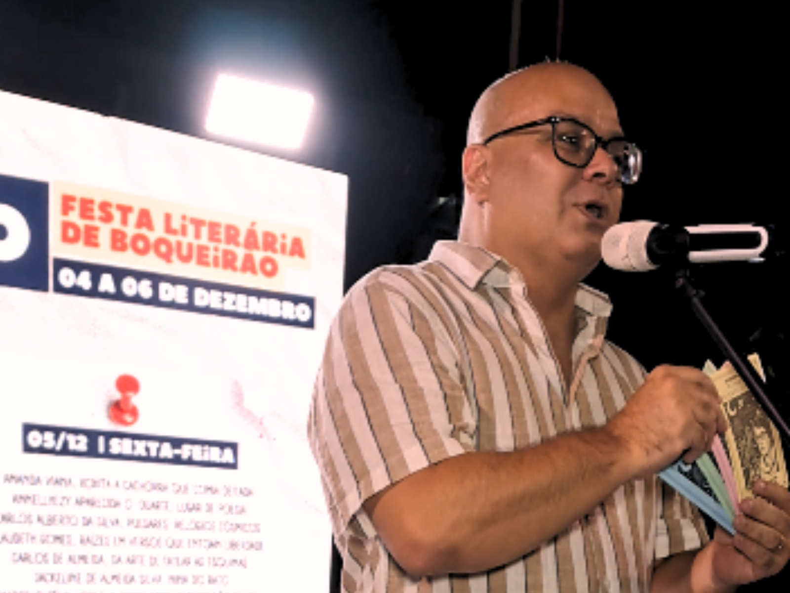
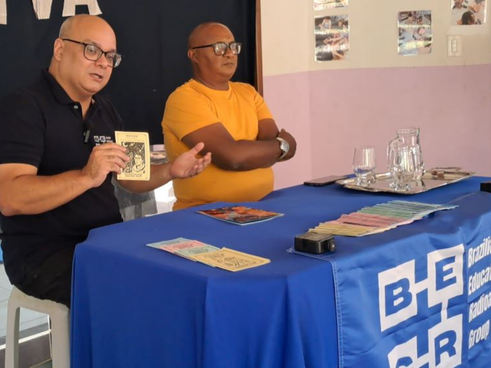
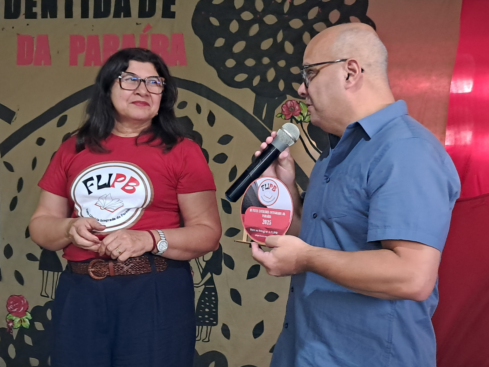
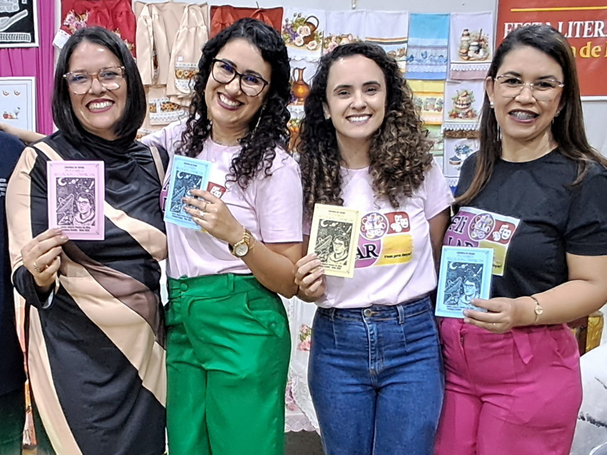
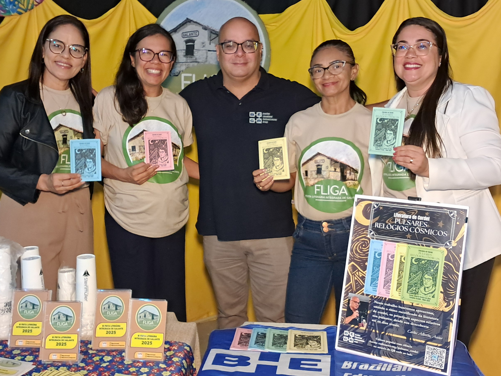
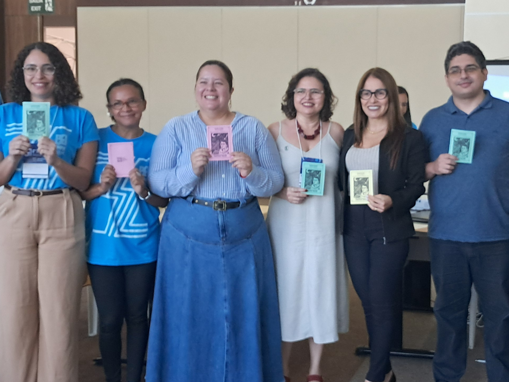
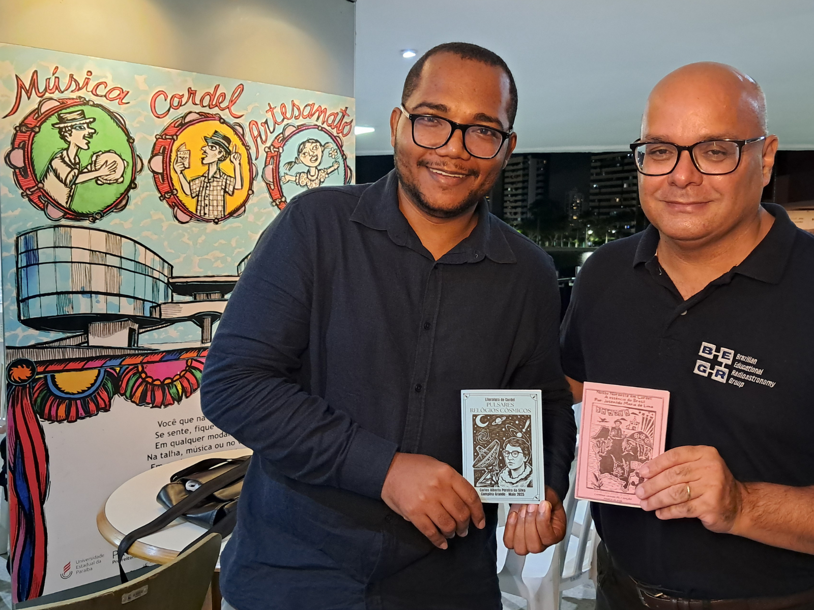

O Cordel na Popularização da Radioastronomia
Trabalho apresentado no 6º Simpósio de Pesquisa, Inovação e Pós-Graduação do IFPB que aborda o uso da literatura de cordel como linguagem para a popularização da radioastronomia.
Acessar trabalho →
INICIATIVA · LITERATURA · DIVULGAÇÃO CIENTÍFICA
Projeto editorial e educativo que aproxima a radioastronomia da literatura de cordel, explorando descobertas, personagens e conceitos científicos por meio da cultura popular.
A INICIATIVA
Radioastronomia em Cordel é uma iniciativa editorial e educativa que aproxima a ciência da literatura popular nordestina. Por meio da linguagem poética do cordel, conceitos, descobertas, instrumentos e questões da radioastronomia são apresentados de forma acessível, combinando divulgação científica, literatura e possibilidades de uso educativo.
Concebida como uma série de seis cordéis independentes, mas interligados, a coleção propõe uma jornada progressiva pelo universo observado através das ondas de rádio — das origens da radioastronomia aos fenômenos e questões que continuam ampliando nossa compreensão do cosmos.

PRIMEIRO TÍTULO
Primeiro título da série Radioastronomia em Cordel, a publicação apresenta ao leitor o universo dos pulsares, aproximando conceitos científicos da tradição narrativa e poética da literatura de cordel.
ISBN: 978-65-01-51176-4
Como citar:
SILVA, Carlos Alberto Pereira da. Cordel – Pulsares: Relógios Cósmicos. Zenodo, 2025. DOI: 10.5281/zenodo.17014320.
PROPOSTA DIDÁTICA
Radioastronomia em Cordel também explora o potencial educativo da literatura popular como ponto de partida para a aproximação com conceitos científicos.
A proposta Do verso à descoberta utiliza Pulsares: Relógios Cósmicos como ponto de partida para um percurso de leitura, investigação e reinterpretação, aproximando a linguagem poética do cordel de textos de divulgação científica e de outras possibilidades de exploração interdisciplinar.
Conheça a proposta didática →PRODUÇÕES ASSOCIADAS
Trabalhos acadêmicos, entrevistas, artigos e outras produções que apresentam, discutem ou ampliam diferentes aspectos do Radioastronomia em Cordel.
Trabalho apresentado no 6º Simpósio de Pesquisa, Inovação e Pós-Graduação do IFPB que aborda o uso da literatura de cordel como linguagem para a popularização da radioastronomia.
Acessar trabalho →Roniere Leite Soares analisa Pulsares: Relógios Cósmicos, abordando a aproximação entre literatura popular e radioastronomia, o potencial educativo da obra e sua inserção no conjunto de produções desenvolvidas pelo BERG.
Roniere Leite Soares · 2025
DOI:
10.5281/zenodo.17048149
Matéria publicada pelo Portal Tocaia apresenta o trabalho desenvolvido pelo BERG e o ecossistema de produções construído em torno dos pulsares, destacando o Radioastronomia em Cordel como uma das iniciativas que aproximam ciência, cultura e educação.
Portal Tocaia
Ler matéria original → Acessar clipping no Zenodo →Reportagem da Rede Ita apresenta o Radioastronomia em Cordel e sua proposta de aproximar radioastronomia, literatura de cordel, cultura e educação.
Rede Ita
Assistir à reportagem →EVENTOS
A trajetória de Radioastronomia em Cordel também se constrói em sua circulação por eventos e atividades de divulgação científica, ampliando os espaços de encontro entre literatura, cultura e radioastronomia.

Pulsares: Relógios Cósmicos, integrou a programação do dia 5 de dezembro da 15ª edição da Feira Literária de Boqueirão (FLIBO).
Leia mais →
O projeto Leitura Viva, parte integrante da programação da Feira Literária de Campina Grande, levou o cordel Pulsares: Relógios Cósmicos para a escola Semear Montessóri.
Leia mais →
Durante o evento de encerramento do ciclo 2025 das Festas Integradas de Literatura da Paraíba (FLIPB), foi apresentado o Cordel Pulsares: Relógios Cósmicos para os alunos que participaram na cidade de Fagundes
Leia mais →
Em setembro foi a vez de Pulsares: Relógios Cósmicos desembarcar em São Sebastião de Lagoa de Roça para a Festa Literária Integrada, compartilhando um pouco com os alunos e comunidade o que vem a ser esses miseriosos objetos astronômicos.
Leia mais →
O Distrito de Galante marca o início da circulação do projeto "Radioastronomia em Cordel" pelas feiras literárias. O evento faz parte do conjunto de Festas Literárias Integradas coordenadas pela FLIPB.
Leia mais →
Primeira apresentação no meio acadêmico da proposta de radioastronomia em Cordel, dentro da programação do 6º SIMPIF (Simpósio de Pesquisa, Inovação e Pós-Graduação) promovido pelo IFPB de João Pessoa.
Leia mais →
O mês de maio marcou o lançamento do projeto Radioastronomia em Cordel, através do seu primeiro título "Pulsares: Relógios Cósmicos, durante o Sarau promovido pelo Projeto de Extensão da UEPB, Departamento de Física: Cordel Pedagógico na Sala de Aula, realizado no Museu de Artes Populares da Paraíba em Campina Grande.
Leia mais →